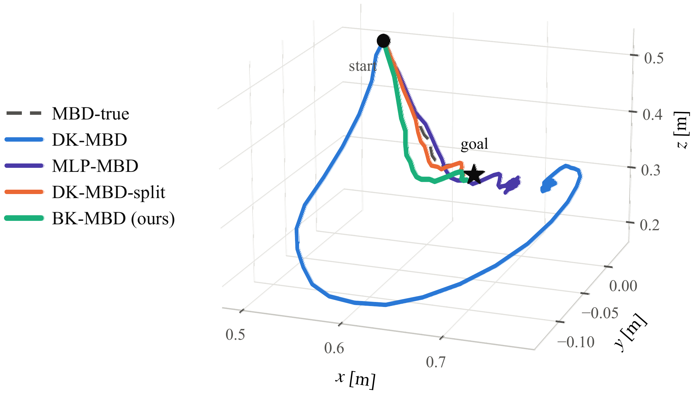
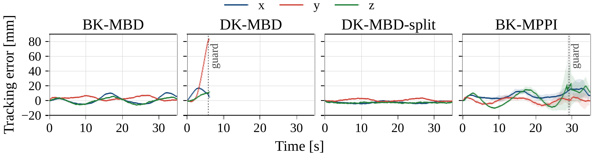

Koopman-Accelerated Model-Based Diffusion for Real-Time Robot Control
Abstract
Conventional Model-Based Diffusion (MBD) achieves effective trajectory optimization by leveraging noise annealing. However, its high computational cost, primarily arising from repeated rollouts of the plant dynamics, limits its applicability to offline settings. To address this limitation, this paper proposes Bilinear Koopman Model-Based Diffusion (BK-MBD). The proposed method lifts the robot's state into a high-dimensional space only once per control step and propagates all candidates in the lifted space thereafter, so each rollout reduces to a fixed number of matrix–vector multiplications. The lift is bilinear so that the input gain varies with the robot's configuration, which a linear lift cannot represent. In simulation, BK-MBD planned in a maximum of 14.7 ms within a 50 ms control period and reached the goal on every trial, where a linear lift almost never did. The annealed schedule improves closed-loop accuracy under the learned rollout, and BK-MBD threaded a passage no single convex region covers, where a convexified bilinear controller rarely succeeded. On a physical manipulator, BK-MBD tracked an initially unknown moving target within the control period and was the only method that met both the tracking task and the deadline.
Contributions
- MBD at the control rate. A bilinear rollout carrying the configuration-dependent input gain is evaluated without freezing or convexification, and the entire annealing process completes within the control period.
- Annealing under a learned rollout. Fixed noise and an annealed schedule are compared under both a learned and an exact rollout. Annealing improves closed-loop accuracy on the learned surrogate while the benefit disappears under the exact rollout, which shows that annealing relieves the sensitivity to rollout error.
- Real-time validation on a physical robot. BK-MBD tracks an initially unknown moving target on a physical manipulator within the control period. A state-independent input gain loses the target and a rollout of the true dynamics cannot be run at the control rate, so both requirements bind on hardware as well.
Method
BK-MBD keeps the annealed sampling optimizer of MBD and has every rollout performed by a lifted surrogate. One control step proceeds as follows.
- Lift once. The measured features are encoded into the lifted state z = Ψθ(b), where a fixed feature map τ supplies the trigonometric terms and a small network carries the products among them. The encoder sits outside both loops below, so it is evaluated once per control step rather than once per candidate.
- Draw candidates. At annealing stage j, the nominal sequence is perturbed as Uk = U + σjεk and projected onto the admissible input set.
- Roll out in the lifted space. Each candidate is propagated by the bilinear update z+ = M(u)z + B0u, which costs m+1 matrix–vector products per step and shares the lifted state they multiply.
- Update by a cost-weighted mean. Softmax weights at temperature α combine the candidates into the new nominal, and the schedule moves to the next, narrower noise level.
Why the rollout must be bilinear
A sampling planner reads only differences of cost within a population whose members differ in the control sequence alone, so what governs it is the response the rollout predicts to an applied input. Decoding one step of a linear lift gives a sensitivity CyB, a single matrix over the whole operating set, and neither the lifted dimension nor the encoder changes that.
The plant instead answers with an input gain that takes a different value at every configuration. Writing νΦ for the variation of that gain over the operating set, the paper proves that every constant matrix M satisfies
sups ‖ Δt Φ(s) − M ‖ ≥ ½ νΦ Δt,
so a linear lift carries an irreducible input-channel error that no amount of capacity removes. The bilinear class has a decoded input gain that is affine in the lifted state, which matches the form the plant exhibits, and the sampling planner evaluates only the total cost of a sequence, so it uses that state dependence as it stands rather than freezing or convexifying it.
Identification
A sampling planner propagates a candidate over the whole horizon and separates candidates by the cost that propagation accumulates, so a model accurate at one step but drifting over the horizon has its drift read as a property of the plant. The lifted features and the lifted dynamics are therefore fitted jointly on length-T snippets matched to the planning horizon, with a decoded-prediction term and a latent-consistency term that holds the propagated state to the image of the encoder under a stop-gradient target.
The bilinear input matrices are initialized at Bi = 0, so training begins exactly at the linear model and the coupling term departs from zero only to the extent that the data support it. The two classes therefore share a starting point, an encoder, a dataset and an objective, and differ only in whether the coupling term is permitted to move.
Annealing under a learned rollout
A learned rollout evaluates a perturbed cost, and the part of that perturbation which is not common to the population reorders candidates. The surrogate therefore admits minima of its own, and under receding horizon the robot executes whatever the sampler settles on. A schedule cannot remove this error; its role is to reduce how strongly one control step depends on a single local view of the surrogate cost.
One noise level fixes both how widely a stage samples and how large a step it takes, so a fixed-noise sampler must trade exploration against refinement. The annealed schedule separates the two roles across successive stages: it opens wide, where the population is spread furthest from the current plan, and closes narrow, where the smoothing and the final displacement are smallest. Since the executed command comes from the last stage, the early stages expose the optimizer to a broader neighborhood while the last stage refines under a less-smoothed cost.
Rollout Class and Planning Latency
Exchanging the rollout model alone, under an identical planner, settles whether the input gain is what decides reaching. DK-MBD leaves the input gain a constant matrix; DK-MBD-large keeps that matrix but raises the lifted dimension; MLP-MBD lets it depend on the state without structure; DK-MBD-split supplies it from analytic forward kinematics; and MBD-true rolls out the true dynamics as an oracle. Trials are paired across conditions over 5 training seeds and 10 goals.
| Rollout model | Input gain | Reach 5 cm ↑ | Reach 1 cm ↑ |
|---|---|---|---|
| MBD-true (oracle) | true dynamics | 10/10 | 10/10 |
| DK-MBD | constant matrix | 10/50 | 1/50 |
| DK-MBD-large | constant matrix, larger lift | 11/50 | 1/50 |
| MLP-MBD | unstructured, state-dependent | 41/50 | 0/50 |
| DK-MBD-split | analytic forward kinematics | 50/50 | 50/50 |
| BK-MBD (ours) | bilinear, state-dependent | 50/50 | 50/50 |
BK-MBD reached the 1 cm tolerance on 50/50 trials, matching the oracle, while DK-MBD reached it on 1/50 and came to rest a median 0.248 m from the goal. DK-MBD-split also reached 50/50 and differs from DK-MBD in the input gain alone, so that is what separated the two. DK-MBD-large and MLP-MBD stopped a median 0.239 m and 0.054 m away, so neither capacity nor unstructured expressiveness removes the failure, which leaves the input gain as the cause.

| Rollout model | Median [ms] ↓ | Worst [ms] ↓ | Deadline misses ↓ |
|---|---|---|---|
| MBD-true (oracle) | 2598 | 2745 | 1200 |
| DK-MBD | 7.6 | 12.5 | 0 |
| BK-MBD (ours) | 11.0 | 14.7 | 0 |
End-to-end planning time covers every line of one control step over all five annealing stages, measured on an Intel Core Ultra 5 225F with ten cores and no GPU. BK-MBD returned at a median of 11.0 ms with a worst case of 14.7 ms and missed no deadline over all 50 trials, while the oracle took a median of 2598 ms and overran the 50 ms period at every one of its 1200 control steps. A bilinear step issues m+1 = 8 matrix–vector products where the linear form issues one, yet costs 11.0 ms against 7.6 ms — less than a factor of 1.5, since those products share the lifted state they multiply.
The Contribution of the Annealed Schedule
Varying the noise schedule alone over the bilinear model settles where the advantage of annealing comes from. All five schedules share one total budget of NS candidates per control step, written as stages × candidates per stage. The single-stage conditions are the MPPI update at the same budget. The reaching task places no obstacle between start and goal, so the true cost is not multimodal and what annealing gains cannot come from multimodality.
| Schedule | Reach 1 cm ↑ | Median final error [m] ↓ |
|---|---|---|
| 1 × NS wide (MPPI) | 33/50 | 0.010 |
| 1 × NS narrow (MPPI) | 15/50 | 0.041 |
| S × N wide | 46/50 | 0.012 |
| S × N narrow | 26/50 | 0.045 |
| S × N anneal (ours) | 50/50 | 0.0097 |
| S × N narrow (oracle rollout) | 10/10 | 0.009 |
| S × N anneal (oracle rollout) | 10/10 | 0.007 |
The annealed schedule gains 17 and 35 goals over the single-stage wide and narrow MPPI conditions, and 4 and 24 over the conditions that repeat the same level S times, so neither the sample budget nor the mere use of several serial stages accounts for the result. Repeating the two schedules on the true-dynamics rollout removes the separation entirely: the narrow schedule reaches 10/10 as the annealed one does, against 26/50 under the learned rollout, and its settled error moves from 0.045 to 0.009 m. The benefit of annealing is therefore tied to surrogate error, not to the sampler's ability to refine a plan.
| σ | Displacement |ΔU| | Error removed | Efficiency (×103) ↑ |
|---|---|---|---|
| 0.3 | 0.109 | 0.00665 | 61.7 |
| 0.8 | 0.292 | 0.00571 | 19.2 |
| 1.2 | 0.418 | 0.00409 | 9.9 |
| anneal | 0.109 | 0.00525 | 48.4 |
Efficiency is the tracking error removed per unit displacement. From σ = 0.3 to σ = 1.2 the displacement grows by a factor of 3.8 while the efficiency drops by a factor of six. The annealed schedule executes at the displacement of the narrow level, 0.109, and retains an efficiency of 48.4 against the 9.9 of the wide level: the final stage produces the executed step, while the preceding wider stages have already exposed the iterate to a broader neighborhood of the current plan.
Non-Convex Passage
Exchanging the optimizer alone settles whether the structure of the free space is what separates them. A single circular aperture in a wall is the only route to the goals on the far side, and the straight chord to any goal crosses the wall below the opening. The drone flies 50 trials, and both planners receive the same trained bilinear model. BK-MBD takes the wall as a cost penalty, while the convexified controller relinearizes the keep-out set into one convex region per step and solves the resulting quadratic program over four iterations along the nominal rollout.
BK-MBD reached the 1 cm tolerance on 50/50 goals and the convexified controller on 10/50, and BK-MBD executed no constraint violation although it treats the wall as a penalty alone. Any convex region that excludes the wall lies entirely on the near side, so the far-side goal is infeasible at every step and the solve converges to the point of that region closest to the goal. The convexified controller settled a median of 0.030 m from the wall — the margin of its own keep-out set — and the ten goals it reached were those closest to the aperture axis, at most 0.148 m against a median of 0.291 m.
Validation on the Physical Robot
Five methods track a target moving along a circle on the physical FR3 under the same CPU budget. The target traverses a circle of radius 0.10 m and period 16 s in the yz plane, and the trajectory is not given in advance, so the controller sees only the target position at each control step. Each trial runs for 35 s — a 3 s lead-in followed by two revolutions — and a guard commands zero velocity and ends the trial when the Cartesian tracking error exceeds 80 mm for 0.25 s. Each rollout class is run ten times, over planner seeds 0 to 9.
Recorded runs
(a) BK-MBD (ours). Tracks the circle for the whole run, inside the 50 ms control period.
(b) DK-MBD. The state-independent input gain loses the target and the guard stops the trial.
(c) DK-MBD-split. Tracks the circle, but its worst-case latency overruns the control period.
(d) BK-MPPI. The same BK rollout without the annealed schedule, at a larger tracking error.
Recorded runs on the physical FR3. The four clips are cropped to a common field of view, so the robot appears at the same scale in each.
Postures over one revolution


Circular tracking on the physical FR3, with postures sampled at equal intervals over one revolution and the executed tool path traced in red.
| Method | Full run ↑ | RMSE [mm] ↓ | Median / worst latency [ms] ↓ |
|---|---|---|---|
| BK-MBD (ours) | 10/10 | 7.09 ± 0.12 | 22.9 / 44.7 |
| DK-MBD | 0/10 | 39.75 ± 0.67 | 10.9 / 23.4 |
| DK-MBD-split | 10/10 | 4.97 ± 0.09 | 28.6 / 83.0 |
| BK-MPPI | 8/10 | 15.76 ± 5.23 | 17.0 / 53.1 |
| MBD-true | 0/10 | 41.22 ± 0.07 | 1617 / 1762 |
Only BK-MBD and DK-MBD-split completed all ten trials. DK-MBD triggered a guard stop in every trial, BK-MPPI completed eight and exceeded the tracking-error guard in the remaining two, and MBD-true issued no nonzero command because its planning latency exceeded the control period. BK-MBD returned at a median of 22.9 ms with a worst case of 44.7 ms and stayed within the 50 ms period over all ten trials, whereas DK-MBD-split overran it at 83.0 ms — so BK-MBD is the only method here that met both the tracking task and the deadline.

The failure of DK-MBD lies in the representation and that of MBD-true in the computation. The state-independent input derivative of DK-MBD represents only the mean input effect over the training distribution, as reflected by the axis errors above and its directional cosine of 0.318, against 0.914 for BK-MBD. The contrasting outcomes of BK-MBD and BK-MPPI under the same BK rollout show that the benefit of the annealed schedule persists on the physical robot: rolling the settled plans of the completed BK-MPPI trials through the model and the robot gave terminal errors of 8.90 ± 2.08 mm and 19.25 ± 8.21 mm respectively, with the robot error larger in all but one trial.
Implementation Settings
The manipulator carries the rollout-class, annealing and hardware experiments; the drone carries the non-convex passage. The FR3 accepts joint velocities through a gravity-compensated servo and is observed as [q, ptcp], with the manipulator Jacobian as its input gain. The drone accepts body-frame linear velocities and a yaw rate and is observed as [p, sinψ, cosψ], with the yaw rotation as its input gain.
| Setting | Manipulator | Drone |
|---|---|---|
| Control period Δt | 50 ms | 50 ms |
| Budget per trial | 120 steps | 120 steps |
| Candidates N, stages S | 800, 5 | 800, 5 |
| Horizon T | 15 | 25 |
| Noise σ | 1.2 → 0.3 | 1.6 → 0.3 |
| Temperature α | 0.4 | 0.5 |
| Lift dimension r | 20 | 13 |
| Fixed feature map τ | [sin q, cos q] | identity |
| Training snippets, T steps each | 6000 | 4000 |
All timings are measured on an Intel Core Ultra 5 225F with ten cores and no GPU. In the reaching experiments each trial starts from rest and drives the tracked output toward a goal over the fixed budget above, without early termination. A trial reaches a tolerance at the first control step whose tracking error falls below it. The reaching experiments cross 5 training seeds, each with its own dataset, with 10 goals for 50 trials per condition, and the trials are paired across conditions.
BibTeX
@inproceedings{anonymous2027bkmbd,
title={Koopman-Accelerated Model-Based Diffusion for Real-Time Robot Control},
author={Anonymous Authors},
booktitle={IEEE International Conference on Robotics and Automation (ICRA)},
note={Submitted},
year={2027}
}